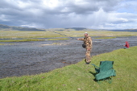

Монголия имеет площадь 1 564 116 кв.км и в основном представляет собой плато,
приподнятое на высоту 900—1500 м над уровнем моря. Над этим плато возвышается ряд горных массивов и хребтов. На юге и востоке страны простираются обширные холмистые и увалистые плоскогорья, пересеченные отдельными возвышенностями. Средняя высота территории Монголии, очень большая – над уровнем моря 1580 м. Низменностей в стране совсем нет. Самая низкая точка страны – котловина Хух нуур – лежит на высоте 560 м. Леса в основном растут в лесостепной зоне, расположенной в северной части страны. Площадь лесного фонда составляет 15,2 млн га, т.е. 9,6 % всей территории.